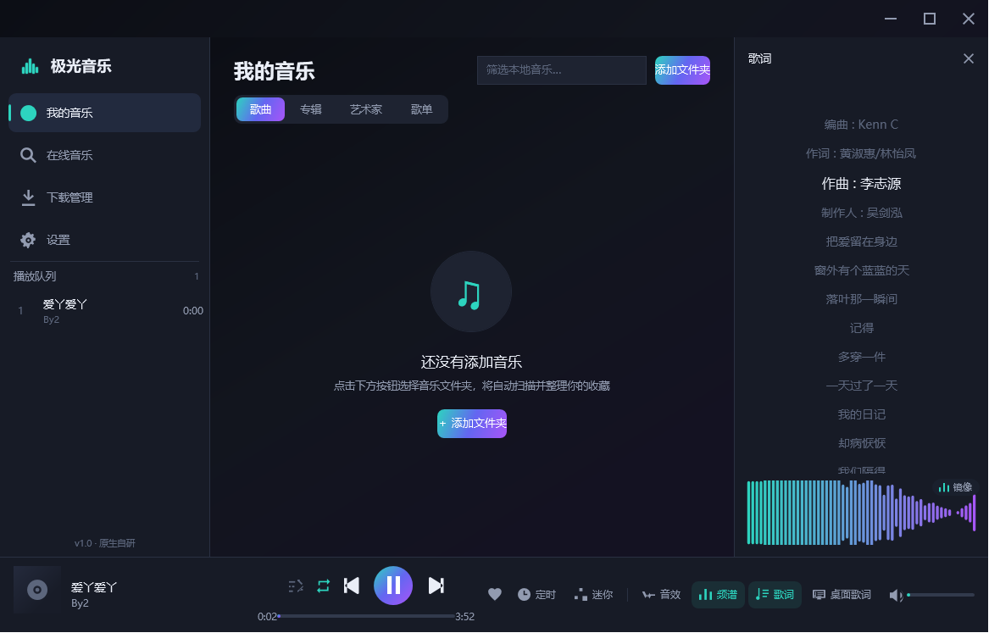
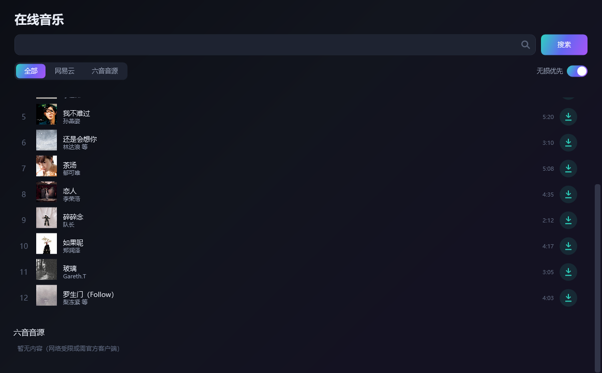
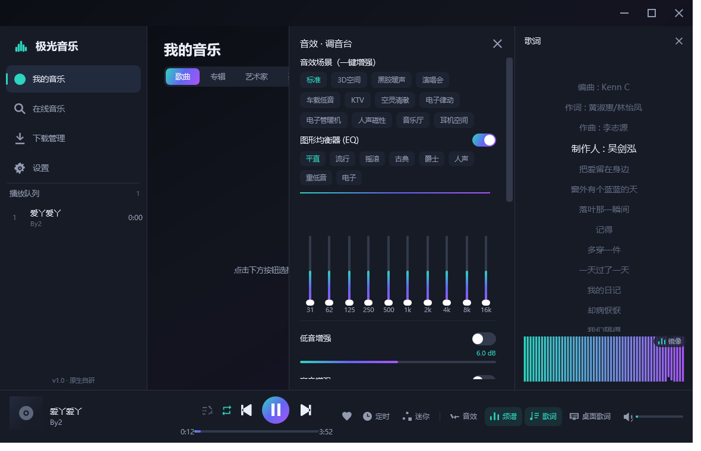
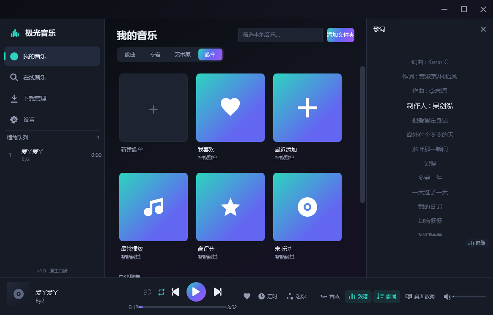
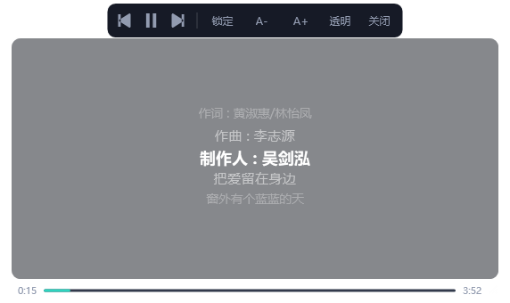

从解码、音效到歌词与音源，每一个环节都按专业播放器的标准打磨。
直调系统 Media Foundation 解码，WASAPI / waveOut 渲染；支持 MP3、FLAC、APE、WAV、AAC、M4A、ALAC、OGG、Opus、WMA、DSF 及整轨 CUE 分轨。
10 段 EQ 与多组预设、低/高音增强、3D 扩展、混响、回声、响度压缩、电子管/磁带饱和、人声消除、平衡、限幅器与无缝淡入淡出。
柱状、镜像、波形、极光帷幕、点阵等多种模式一键切换，主界面可随时开关，跟随节拍实时律动。
无歌词时自动在线搜索匹配（时长智能对齐），也可手动搜索多个版本、预览并一键替换，歌词缓存绑定、离线可用；桌面歌词置顶、可锁定、可调整区域大小/透明度/字号，带播放控制与进度条，右键即可解锁。
接入网易云公开接口、苹果官方预览及 Audius、ccMixter 授权资源；支持以 JavaScript 脚本（兼容落雪音源）导入并自定义搜索，可添加多个、按源显示。
启动后台检查更新清单，发现新版本即提示下载，校验 SHA256 后自动替换并重启，无需另行安装。
多文件夹扫描与实时监听、标签/封面写回、批量重命名、智能歌单、播放统计与 ReplayGain 响度扫描。
全局快捷键与多媒体键、迷你模式、睡眠定时、记忆播放、高 DPI 适配，细节处更顺手。
JSON、FFT、标签、歌词、DSP 与脚本解释器全部自主实现，不依赖任何第三方库，单文件绿色、启动迅速。
格式转换/转码与自研无损 FLAC 编码、MusicBrainz 在线标签封面补全、重复检测、清理向导与按标签归档。
深色/浅色双主题与 8 套强调配色，支持键盘焦点导航、UI Automation 与触屏热区，高 DPI 下清晰锐利。
深色极光配色，三栏布局，常用操作触手可及。点击图片可放大查看。





下载后双击即可运行，无需安装；系统自带 .NET Framework 4.x 即可。
E0859730A4495CD66416ADA71CBBD057DF30C361F6ACBCA8AEC1C40B10363F51